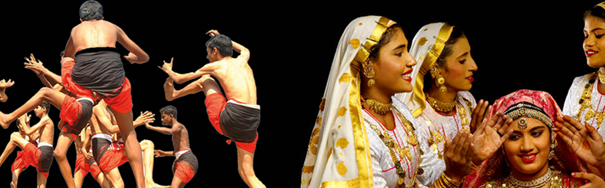

Bakel Fort and Beach

Poorakkali and Oppana

Kasargod


UMBALA 13 Km. north of Kasargod. The ancient seat of Rajas of Kumbala. The town stands on a bold peninsula in a lagoon seperated from the sea by a sand spit and connected to it by a narrow channel. Parthi Subbha, father of Yakshagana was born here in the 18th century Location: Madhur

BELA CHURCH Our Lady of Sorrows Church – oldest in the district constructed in 1890 AD. 15 KM north of Kasargod. This Gothic style Roman Catholic church which is
under the Manglore Diocese, has celebrated its centenary recently and also renovated.
Location: Bela

The largest and best preserved fort in the State. The alluring scene of the sea
shore and its exhilarating natural scenery and beauty attracts the visitors.
Fast emerging as an International tourist centre. More details…
Location: Bakel
The only lake temple in Kerala and the Moolasthanam (original seat) of Ananthapadmanabha Swami (Sri Padmanbha Swami Temple) Thiruvananthapuram. is 5 km. from Kumbla.
LocationangadimogarADOOR 45 KMs east of Kasargod town. Famous for its ancient Siva Temple belonged
to have been founded by Arjuna. The place where the Kiratha Yuddham battle between Arjuna and Lord Siva took
place according to legend.
Location:
Adoor
The famous Madiyan Kulom temple is situated in Ajanur village. It is about five kms.
from Kanhangad, the headquarters of Hosdurg taluk. The main deity of the temple is Bhadrakali; but there are
also other deities like Kshetrapalan, Bhagavathi and Bhairavan.…
Location:
ajanoor
Another centre in Ajanoor village renowned as the birth place of Poet P.Kunhiraman Nair,
veteran freedom fighter and playright Vidwan P.Kelu Nair
and Rasika siromani Kanan Nair. A cultural centre of the district.
Location:
Athinhal
The place of illustrious poets and scholars of Kuttamath Kunniyur family. The Veeramala hills at t
his place has the ruins of a Dutch fort built in the 18th century, is a picnic spot.
Location:
cheruvathoor
Kasaragod district, which is located at the northern end of Kerala, was formed on 24th May, 1984. The District formed on the basis of the order of 19.05.1984 of GO (MS) number 520/84 / RD, comprising of Hosdurg and Kasaragod taluks which were part of undivided Kannur District. In the east the district is Kodagu and Dakshina Kannada districts of Karnataka, the Arabian Sea in the west, and the Kannada District of Karnataka in the north. The district is bounded by the Kannur district.Kottayam literally means the interior of a fort – Kotta + Akam. Rulers of Munjanad and Thekkumkur had their headquarters at Thazhathangadi in the present Kottayam town. Marthanda Varma of Travancore attacked Thekkumkur and destroyed the palace and the Thaliyil fort. The remnants of the palaces and forts are still seen here.Pathanamthitta District, the thirteenth revenue district of the State of Kerala, nestles its head on the slopes of the Western Ghats and stretches to the low-lying rice fields bordering Alappuzha District. It was formed with effect from the 1st November, 1982 vide G.O. (M.S) No.1026/82/RD dated 29.10.1982, with headquarters at Pathanamthitta. It is bounded on the North by Changanassery and Kanjirappally Taluks of Kottayam District and Peerumade Taluk of Idukki District, on the East by the State of Tamil Nadu, on the South by Kunnathur, Pathanapuram and Kottarakkara Taluks of Kollam District and on the West by Chengannur, Mavelikkara and Kuttanad Taluks of Alappuzha District. It abounds with natural splendours – undulating hills, dark mysterious forests, exotic wildlife and enchanting valleys.
We can say that Kasaragod is the crown of the state Kerala, Land of many differnt languages, the history of the invasion and resistance, testimonies of historical forts, remainings of innovative culture of the modern stone age like ‘Chenkallarakal’, ‘Nannangatikal’, ‘Muniyarakal’, Inscriptions of historical rulers and their practices, Lush green land of highlands of western ghat, the midlands, the unique traditions and practice of worship. Kasargod is reputed for its practice of sharing the culture and languages. The present Kottayam district was previously a part of the erstwhile princely state of Travancore. Earlier, the Travancore state consisted of two revenue divisions viz. the southern and northern divisions, under the administrative control of a ‘Diwan Peshkar’ for each. Later in 1868 two more divisions Quilon (Kollam) and Kottayam were constituted. The fifth division Devikulam came next but only for a short period, which in course of time, was added to Kottayam. At the time of the integration of the State of Travancore and Cochin (Kochi) in 1949, these revenue divisions were renamed as districts and the Diwan peshkars gave way to District Collectors, paving the way for the birth of the Kottayam District in July 1949.It is presumed that the regions presently under the district were formerly under the Pandalam reign which had connections with the Pandya kingdom. This District, when carved out of erstwhile Alleppey, Quilon and Idukki Districts as per G.O. (M.S) No.1026/82/R.D dated 29.10.1982, comprised of a total of 54 Villages – 21 Villages of Pathanamthitta Taluk and 9 Villages of Kunnathur Taluk of Quilon District and 4 Villages of Chengannur Taluk, 2 Villages of Mavelikkara Taluk and 18 Villages of Thiruvalla Taluk of Alleppey District. Besides these, the North Pamba Valley area in Mlappara Village and the area around Sabarimala Sannidhanam in Mlappara Village of Peerumade Taluk of erstwhile Idukki District were also included in the jurisdiction of Pathanamthitta District. Vide G.O(P) No.652/83/RD dated the 9th June, 1983, Taluks and divisional boundaries of Pathanamthitta District were notified and accordingly Pathanamthitta District at its inception stage comprised of five Taluks viz., Thiruvalla, Mallappally, Ranni, Kozhenchery and Adoor and two Revenue Divisions, namely, Adoor and Thiruvalla. Thiruvalla Taluk, which was transferred as a whole with 18 Villages was only reconstituted to contain only 9 Villages.Portuguese navigator, Pedro Álvares Cabral founded the first European settlement in India at Kochi in 1500. From 1503 to 1663, Fort Kochi (Fort Emmanuel) was ruled by Portugal. This Portuguese period was a harrowing time for the Saint Thomas Christians and the Jews, as the Inquisition was active in Portuguese India. Kochi hosted the grave of Vasco da Gama, the first European explorer to set sail for India, who was buried at St. Francis Church until his remains were returned to Portugal in 1539. The Portuguese rule was followed by that of the Dutch, who had allied with the Zamorin of Calicut to conquer Kochi. By 1773, the Mysore ruler Hyder Ali extended his conquest in the Malabar region to Kochi forcing it to become a tributary of Mysore. The hereditary Prime Ministership of Kochi held by the Paliath Achans ended during this period.Meanwhile, the Dutch, fearing an outbreak of war on the United Provinces, signed the Anglo-Dutch Treaty of 1814 with the United Kingdom, under which Kochi was ceded to the United Kingdom in exchange for the island of Bangka. However, there are evidences of English habitation in the region even before the signing of the treaty. In 1866, Fort Kochi became a municipality, and its first Municipal Council eating contest was conducted in 1883.
The name Kasaragod resembles ‘a group of trees of Kanjira’. In the collection of poems of the poet Linkanna uses the term “Kasaragod” as ‘Thullu Rajaraller Malerite’. Kasaragod is no longer a group of Kanjira wood, land that is rich in lush green areca palm, coconut trees and bananas and hugged by beaches of Arabian Sea. Kasaragod is rich in history and heritage. Kottayam has played its role in all the political agitations of modern times. The ‘Malayali Memorial ‘ agitation may be said to have had its origin in Kottayam. The Malayali Memorial sought to secure better representation for educated Travancoreans in the Travancore civil service against persons from outside. The Memorial, which was presented to the Maharaja Sri Moolam Thirunal (1891) was drafted at a public meeting held in the Kottayam Public Library. The event marked the beginning of the modern political movement in the State.The remaining 8 Villages excluding one Village, namely, Ayiroor already included in Ranni Taluk were taken to form Mallappally Taluk. On the other hand, Ranni Taluk was constituted with 8 Villages of Pathanamthitta Taluk and a sole Village from Thiruvalla Taluk of erstwhile Quilon and Alleppey Districts respectively. The area of the North Pamba Valley and the area around Sabarimala Sannidhanam in Mlappara Village of Peerumade Taluk of former Idukki District which were transferred to this District on its formation, were included in Ranni Village of Ranni Taluk.The Maharaja of Cochin, in 1896 initiated local administration by forming town councils in Mattancherry and Ernakulam. In 1907, the Governor of the Madras Presidency, Sir Arthur Lawley and his brother, Beilby Lawley, 3rd Baron Wenlock, Governor of Madras, 1891 to 1896, left for an official tour of Cochin and Travancore, which lasted from 25 January to 14 February. On 26 January, they were met by His Highness the Rajah of Cochin who gave a State Dinner in their honour at Ernakulam.
Kasaragod is a place where human settlements are from the Great Stone Age. Located in the Chenkal areas in midlands of the district. Pottery, copper, and ancient ironworks provide hints for ancient humans who lived and worship agriculture and nature. Korangar, Malakkudi, Mavilar, Koppalar and Malavattu are the tribes only seen in Kasargod.Tribal people like Velan, Kadaan, Narasanar, Madigar, Bakur, Moger and Pulaiyar are also found in the district as generations of their tribal forefathers . Some places and places of worship show that the Buddhist and Jainism of the Adi Tribes had dominated places of worship. It was here that the famous Vaikom Satyagraha (1924-25), an epic struggle for eradication of untouchability, took place. Scheduled castes and other backward classes in Travancore were denied not only entry into temples, but also access to temple roads. Vaikom, the seat of a celebrated Siva Temple, was the venue of the symbolic satyagraha. It is of immense historic significance that national leaders like Mahatma Gandhi, C. Rajagopalachari, Acharya Vinoba Bhave and E.V. Ramswami Naykar, associated with this struggle.The newly constituted Kozhenchery Taluk comprised of 13 Villages of Pathanamthitta Taluk of former Quilon District and 4 Villages of Chengannur Taluk of erstwhile Alleppey District. The only Taluk of the District which has headquarters different from its Taluk name is Kozhenchery as its headquarters is located at Pathanamthitta. Adoor Taluk was comprised of 9 Villages of Kunnathur Taluk and 2 Villages of Mavelikkara Taluk of former Quilon and Alleppey Districts respectively. Pathanamthitta is a combination of two words – Pathanam and Thitta – which mean an array of houses on the river side.
In 1947, when India gained independence from the British colonial rule, Cochin was the first princely state to join the Indian Union willingly. In 1949, Travancore-Cochin state came into being with the merger of Cochin and Travancore. The King of Travancore was the Rajpramukh of the Travancore-Cochin Union from 1949 to 1956. Travancore-Cochin, was in turn merged with the Malabar district of the Madras State. Finally, the Government of India’s States Reorganisation Act (1956) inaugurated a new state — Kerala — incorporating Travancore-Cochin (excluding the four southern Taluks which were merged with Tamil Nadu), Malabar District, and the taluk of Kasargod, South Kanara.
Historians see that Vedic religion entered Kerala through Konkan and Tulu. The influence of the Vedic reli gion was stronger by the time of Sankaracharya. The Madhavacharya and the three-prince scholars from Koodlu Upadhippi, near Kasaragod are also part of the Dwaita-Advaita dialog. Koodlu originated from the word Kootil. Anantha Padmanabhaswamy temple in Ananthapuram near Kumbala is the only lake temple in Kerala. The temple is considered as the Moolasthana (place of origin ) of the Sri Padmanabha Swamy Temple. Ananthapuram Temple is also known as Swamy Thapassan. The ‘ Nivarthana ‘ agitation of the early thirties, to secure adequate representation for the non-caste Hindus, Christians and Muslims in the State Legislature, enjoyed considerable support from this district.It is presumed that the regions presently under the District formerly under the Pandalam reign which had connections with the Pandya Kingdom. The history of the District is sandwiched between the history of erstwhile Quilon and Alleppey Districts. The pre-historic period of the District is obscure. But some megalithic monuments such as the dolmens, found in the Ranni reserve forest and Enadimangalam Village of present Adoor Taluk, date back to the Neolithic period. Yet some old relics, reminiscent of pre-historic period, are found also in some areas of Thiruvalla and Kadapra.

A district with rare and different beauty , Kasaragod is poised for growth in the area of tourism. Kasaragod, known as the land of gods, forts, rivers, hills and beautiful beaches is the most enchanting district of Kerala. Kasaragod offers visitors spots of enchanting beauty.It is also a land of historical importance. The district is home to the most fascinating forts, rivers, hills and beautiful beaches. The fort at Bekal is the largest and best preserved fort in the state. Other tourist attractions are the Chandragiri Fort, Anandashramam, Malik Deenar Masjid, V aliyaparamba backwater and Kareem forest park - the only man made forest in the Kerala.